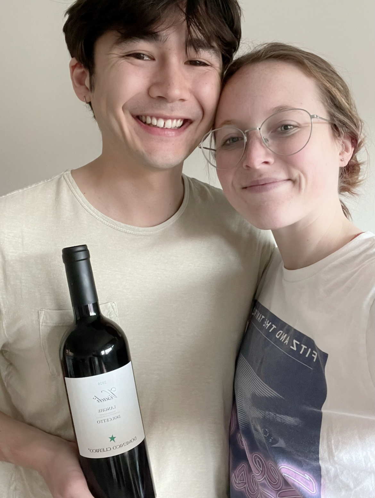

Dolcetto
What is it?
Dolcetto is a black wine grape primarily grown in Piedmont, Italy. Though the translation of the word Dolcetto means "little sweet one", this wine is actually surprisingly tart, occasionally has "aggressive tannins", and is not known for being very sweet [1]. Primary flavors of Dolcetto are plum, blackberry, cocoa, black pepper, and violet.
The particular Dolcetto wine we got was grown in the Langhe region of Italy. Most DOC (Denominazione di origine controllata) Dolcetto wines have two levels: a "standard" and a Superiore. The Langhe Dolcetto variety is the only Dolcetto DOC wine without levels (i.e., all wines are the same distinction). Suggested pairings with Dolcetto are rich, dark meat dishes or dishes made with garlic, roasted tomatoes, and eggplant. We had this dish with pesto gnocchi, which went pretty well with the wine!
Molly's Rating and Tasting Notes
3.0. On the nose, I basically only get grape. I can't really get too much flavor on the tongue due to the overwhelming amount of tannin -- I concur with the assessment of "aggressive" tannins. There is maybe some smoke or woody flavors or something in the finish. The wine got better as I kept drinking it, but I still can't give it more than a 3. Not my type of wine at all, and I would say not that easy to drink. If you like dry reds with lots of tannin, you'd probably like this.
Ryan's Rating and Tasting Notes
8.2. I get a lot of nose on this bad boy. I'm sensing some plum, cherry, flowers (indescript), and tar. Every now and then, I also get some warm spices and bready notes thrown into the mix. On the tongue it's quite delightful and intriguing. Initially, it's very fruit-forward with strong notes of plum, coffee fruit, and boysenberry. As soon as the fruit flavors came in though, they were replaced with stronger, more astringent flavors. Of those flavors include a smoky meatiness, as well as tree bark. The end is a little bitter with some hints of pepper. The wine dries out the mouth a little and doesn't stay very long, which is probably for the best as it is a little intense. Overall a very interesting red wine that's up my alley.
References
[1] Madeline Puckette and Justin Hammack. Wine Folly: The Master Guide. Avery - A Penguin Imprint, New York, NY, 2018.
[2] "Dolcetto." Wine Folly. https://winefolly.com/grapes/dolcetto/. Accessed: April 2023.